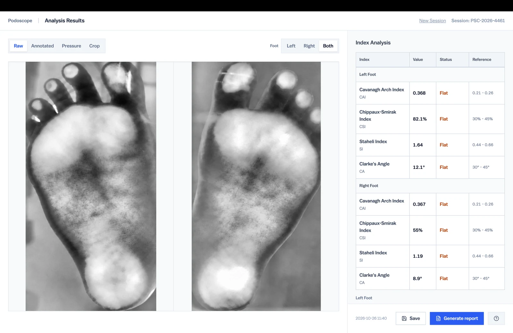
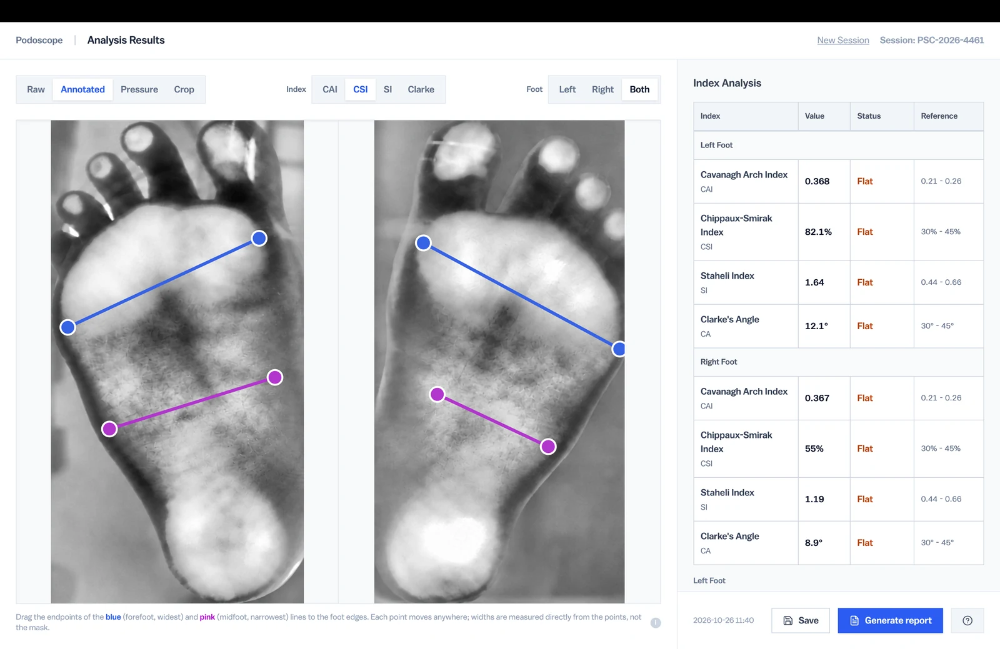
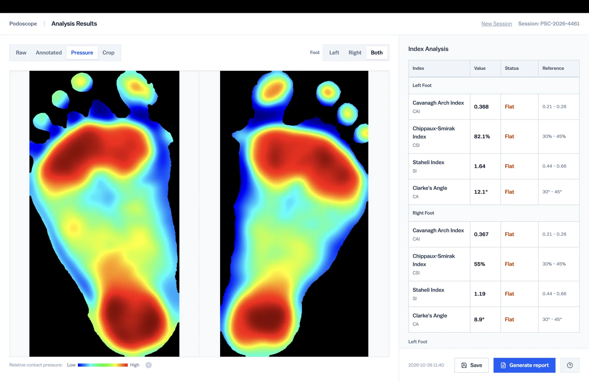
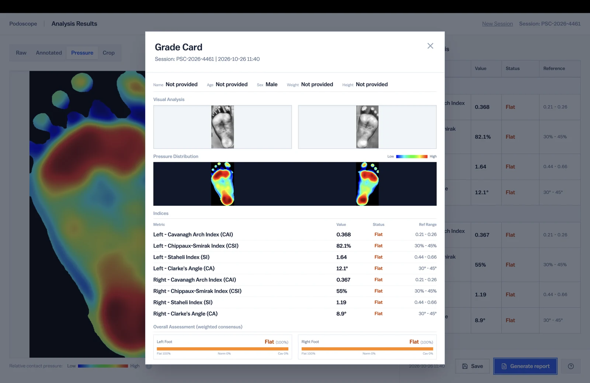

Reducing the Step Height
An earlier prototype was tall, bulky, and difficult to step on to without assistance. The redesign prioritised a lower platform to make stepping onto the device easier.
Scroll down to advance the product render and scroll up to reverse it. The sequence settles gently when scrolling stops.

A low cost smart device for foot imaging and semi-automatic arch index measurement and analysis.
This project explored how foot imaging and computed measurements to assess high and low arches, bunions, and other foot conditions could be provided in an easy to use and affordable form factor.
Designed for podiatrists and other foot-care practitioners, it provides a recorded image and arch measurements to support assessment and create a record of the session.
Designed for and prototyped at BIOMADE Lab at BITS Pilani Goa Campus
The patient stands on the platform while the device captures an illuminated image of the soles under body weight. The mirror underneath lets the operator get a quick look at the footprint when a detailed analysis is not needed.
The aim was to bring foot imaging and arch measurements together in an affordable device for clinical use. Research and the existing lab prototype informed three priorities.
Use accessible components to combine image capture, measurements, and reporting without the cost of a commercial digital scanner.
Reduce the step height of the earlier prototype, making it easier for patients who might otherwise need assistance to get onto the device.
Bring image review, adjustable measurements, and report generation into one software workflow for the practitioner.

Design Specifications
An earlier prototype was tall, bulky, and difficult to step on to without assistance. The redesign prioritised a lower platform to make stepping onto the device easier.
A wide camera beneath the platform captures both feet. The mirror provides a quick visual check of the footprint without opening the analysis software.
The enclosure’s outward draft gives the form a broader visual base and a sense of stability. A working prototype combined a wooden body, an acrylic platform, and a 3D printed enclosure.
Software
Live preview helps the operator check positioning before capture. The captured image can then be reviewed, cropped, and analysed in the accompanying software.

The software calculates multiple arch indices from the scanned images. A weighted score helps make an informed diagnosis. The operator can adjust measurement points and review each result against its reference range.

The colour map displays differences in image intensity across the footprint, providing another way for the podiatrist to inspect the pattern of contact under body weight.

Save a session with patient details and clinical notes, then generate a PDF report containing the foot images, measurements, and assessment summary. A reference guide accompanies the results.

The project resulted in a functional MVP combining foot imaging, semi-automatic arch index analysis, and report generation. The prototype produced clear footprint images using a low-cost hardware setup.
Image detection still requires operator review and adjustment. Further development would focus on improving detection reliability and refining the chassis, enclosure fit, and assembly.
MVP development and testing. All IP is owned by BITS Pilani, Goa Campus.